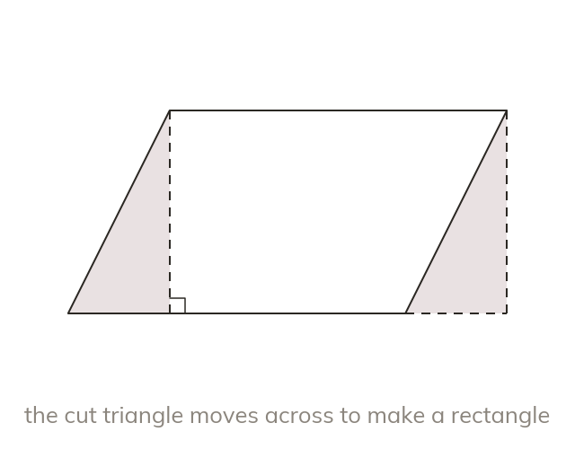

A rectangle in disguise
Move a triangle from one end of a parallelogram to make a rectangle. So area = base × perpendicular height, never × the slant side.
Cutting a triangle off one end of a parallelogram and moving it to the other end makes a rectangle. So its area is base × perpendicular height, never base × slant side.